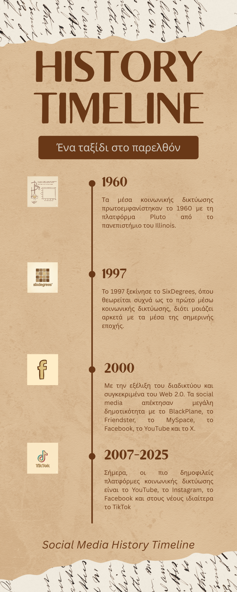
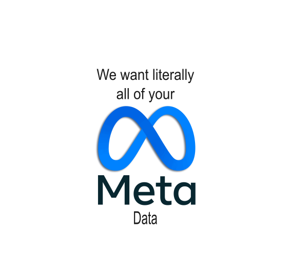
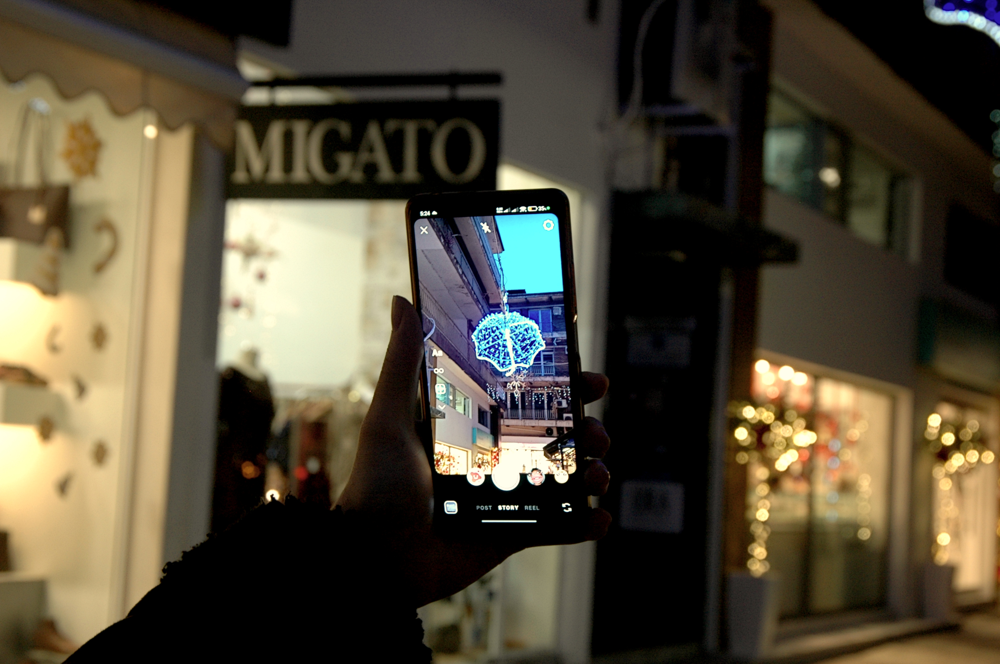

Τα μέσα κοινωνικής δικτύωσης πρωτοεμφανίστηκαν το 1960 με τη πλατφόρμα Pluto από το πανεπιστήμιο του Illinois.
Προσέφερε πρώιμες μορφές μέσων κοινωνικής δικτύωσης με καινοτομίες όπως, σημειώσεις, φόρουμ και μηνύματα.
Το 1997 ξεκίνησε το SixDegrees, όπου θεωρείται συχνά ως το πρώτο μέσω κοινωνικής δικτύωσης, διότι μοιάζει αρκετά με τα μέσα της σημερινής εποχής.
Ήταν η πρώτη διαδικτυακή υπηρεσία που σχεδιάστηκε για να συνδέει τους χρήστες με τα πραγματικά τους ονόματα αντί με ανώνυμα.
Διαθέτει επίσης δυνατότητες όπως προφίλ και λίστες φίλων.
Στις αρχές της δεκαετίας του 2000, με την εξελίξει του διαδικτύου, πιο συγκεκριμένα όταν εμφανίστηκε το Web 2.0,
τα social media απέκτησαν μεγάλη δημοτικότητα με το BlackPlane, το Friendster, το Myspace, το Facebook, το YouTube και το Twitter.
Σύμφωνα με το Pew Research Center για την χρήση των μέσων κοινωνικής δικτύωσης,
σήμερα οι πιο δημοφιλείς πλατφόρμες κοινωνικής δικτύωσης είναι το YouTube, το Facebook και το Instagram.
Εν έτη 2025, σχεδόν όλοι έχουν μέσα κοινωνικής δικτύωσης, ωστόσο, όπως όλα τα πράγματα, έτσι και τα social media, έχουν πάρα πολλά προβλήματα.
Άγχος, κατάθλιψη, διαταραχές ύπνου, σωματικά συμπτώματα, ψεύτικες ειδήσεις, έντονο clickbait και προβλήματα με την συλλογή προσωπικών δεδομένων.
Συνεχίστε να διαβάζετε για να ανακαλύψετε τα κρυφά προβλήματα με τη χρήση των μέσων κοινωνικής δικτύωσης και πως μπορούμε να προστατεύσουμε την ψυχική μας υγεία σε έναν κόσμο που είναι πάντα συνδεδεμένος.
Αρχικά, η έντονη χρήση των μέσων κοινωνικής δικτύωσης, μπορεί να οδηγήσει σε μακροπρόθεσμες συνέπειες και να μειώσει τις κοινωνικές επαφές πρόσωπο με πρόσωπο. Επίσης, η υπερβολική χρήση μπορεί να προκαλέσει προβλήματα ύπνου, ένταση και πονοκεφάλους. Οι συγκρίσεις, η έκθεση σε αρνητικά νέα και η αίσθηση ότι οι άλλοι έχουν πιο ενδιαφέρουσες ζωές οδηγεί σε κατάθλιψη και μοναξιά. Η διαρκής ανάγκη να είναι συνδεδεμένοι και να μην χάνουν τίποτα απ' ότι συμβαίνει στον ψηφιακό τους κύκλο προκαλεί άγχος και τέλος η υπερβολική χρήση μπορεί να οδηγήσει σε εθισμό, φαινόμενο που θυμίζει πολύ τις εξαρτήσεις ή απομάκρυνση από το παρόν και παραμέληση υποχρεωσεων. Επιπλέον, σύμφωνα με την ψυχολόγο Εβελίνα Εξάρχου, «τα μέσα κοινωνικής δικτύωσης ενισχύουν την χαμηλή αυτοεκτίμηση, εσωστρέφεια, ματαιοδοξία, απληστία και διαστρεβλώνουν την εικόνα της πραγματικότητας».
Τα τελευταία χρόνια, όλο και περισσότεροι άνθρωποι χρησιμοποιούν τα μέσα κοινωνικής δικτύωσης ως κύρια πηγή ενημέρωσης. Ωστόσο, παρατηρούμε μια ενδιαφέρουσα στροφή. Σύμφωνα πάλι με την έρευνα του Pew Research Center για την εμπιστοσύνη των μέσων κοινωνικής δικτύωσης, οι νέοι τείνουν να εμπιστεύονται λιγότερο τα μέσα για την ενημέρωσή τους. Οι συνεντευξιαζόμενοι μας συμφωνούν με αυτό και μάλιστα σημείωσαν ότι «οι εταιρείες πρέπει να φιλτράρουν τον αλγόρυθμο και δώσουν περισσότερα εργαλεία στους χρήστες, ώστε να αντιμετοπίσουν τις ψεύτικες ειδήσεις». Δυστυχώς, η κατάσταση επιδεινώνεται μέρα με τη μέρα. Βλέπουμε να διαδίδονται πολλές ψευδείς πληροφορίες, clickbait τίτλοι ακόμη και ειδήσεις πολύ χαμηλής ποιότητας. Σύμφωνα με τον πατέρα Νικόλαο Κούττικα «οι χρήστες που διαβάζουν κυρίως ειδήσεις στα μέσα κοινωνικής δικτύωσης πρέπει πάντα να επαληθεύουν τις πληροφορίες». Η κατάσταση πρέπει να αλλάξει γρήγορα. Η παραπληροφόρηση και οι ψεύτικες ειδήσεις ΄ήταν πάντα ένα πρόβλημα, ωστόσο η κατάσταση φαίνεται να χειροτερεύει με την είσοδο της δημοσιογραφίας στα μέσα κοινωνικής δικτύωσης.

Τα μέσα κοινωνικής δικτύωσης είναι πλέον ευρέως γνωστά για την έντονη συλλογή δεδομένων και τα ζητήματα προστασίας προσωπικών δεδομένων. Στην αρχή, ξεκίνησαν με δεδομένα που οι χρήστες μοιράζονται με τη θέληση τους στις πλατφόρμες και συνέχισαν με τις εταιρείες να ενσωματώνουν στοχευμένες διαφημίσεις και trackers στις εφαρμογές. Βλέπουμε όμως μια πιο περίπλοκη τροπή των γεγονότων το καλοκαίρι του 2025, με τη Meta να παραβιάζει την ασφάλεια των Android και iOS για να αποκτήσει πληροφορίες χρηστών από τους φυλλομετρητές. Μια συμπεριφορά που θυμίζει σε μεγάλο βαθμό, τον τρόπο λειτουργίας ενός κακόβουλου λογισμικού. Ένας εκπρόσωπος της Meta σε μια προετοιμασμένη δήλωση ανέφερε ότι, η εταιρεία σταμάτησε την παρακολούθηση «μόλις ενημερώθηκε για τις ανησυχίες». Επιπλέον, τον Ιούλιο του 2019, ανακοινώθηκε ότι το Facebook θα επιβαρυνθεί με πρόστιμο 5 δισεκατομμυρίων δολαρίων από το FTC, λόγω παραβιάσεων προσωπικών δεδομένων, καθώς η Meta μοιραζόταν δεδομένα με την Cambridge Analytica χωρίς τη συγκατάθεση των χρηστών. Τα δεδομένα χρησιμοποιήθηκαν για την αναλυτική υποστήριξη των προεκλογικών εκστρατειών του Ted Cruz και του Donald Trump για τις προεδρικές εκλογές του 2016.

Πολλά από τα πράγματα που θα αναφερθούν δεν θα συμβούν ποτέ, καθώς πολλά από αυτά θα «βλάψουν» τα έσοδα των εταιρειών. Είναι κρίμα να σκέφτεται κανείς πρώτα τα χρήματα και μετά τους ανθρώπους, αλλά δυστυχώς αυτή είναι η πραγματικότητα. Τα μέσα κοινωνικής δικτύωσης πρέπει να επιστρέψουν στις ρίζες τους, να θυμηθούν οι εταιρείες τι τα έκανε σπουδαία στο παρελθόν. Δεν πρέπει να υπάρχουν πλέον εθιστικοί αλγόριθμοι που κρατούν τους χρήστες συνεχώς απασχολημένους, αλλά πρέπει επίσης να δίνουν στους χρήστες περισσότερη ελευθερία όσον αφορά τα προσωπικά τους δεδομένα και να τους παρέχουν περισσότερα εργαλεία για την καταπολέμηση της παρενόχλησης και των ψευδών ειδήσεων. Οι εταιρείες πρέπει επίσης να παρέχουν στους γονείς περισσότερα εργαλεία γονικού ελέγχου για να τους βοηθήσουν να προστατεύσουν τα παιδιά τους. Δεν μπορούμε να περιμένουμε τις εταιρείες να κάνουν μια αλλαγή. Οι χρήστες πρέπει να περιορίσουν τον χρόνο που περνούν στα κοινωνικά μέσα. Πρέπει να βρουν περισσότερα χόμπι για να αντικαταστήσουν τον χρόνο που περνούν στα κοινωνικά μέσα με κάτι πιο ουσιαστικό. Οι γονείς δεν πρέπει να επιτρέπουν στα παιδιά τους να χρησιμοποιούν τα μέσα κοινωνικής δικτύωσης ή αν τα αφήνουν, πρέπει να τα παρακολουθούν συνεχώς και να θέτουν όρια. Στη χειρότερη περίπτωση, αν τα μέσα κοινωνικής δικτύωσης επηρεάζουν τους ανθρώπους περισσότερο από όσο θα έπρεπε, πρέπει να κάνουν διάλειμμα από τα μέσα κοινωνικής δικτύωσης ή να τα διαγράψουν εντελώς.
Η απάντηση είναι ναι, τα μέσα κοινωνικής δικτύωσης έχουν πράγματι πολλά θετικά στοιχεία. Ουσιαστικά, έγιναν διάσημα και σημαντικά επειδή διευκόλυναν την επικοινωνία. Θυμάστε τις μέρες που όλοι «στέλναμε μηνύματα» χρησιμοποιώντας γράμματα; Εγώ προσωπικά δεν τις θυμάμαι, διότι δεν είχα γεννηθεί ακόμα και χαίρομαι γι' αυτό. Επιπλέον, παρέχουν την ευκαιρία να έρθουμε σε επαφή με πολλές διαφορετικές κουλτούρες μέσω φωτογραφιών, βίντεο και αμεση ενημέρωση, αν προέρχονται από αξιόπιστες πηγές. Είναι όμως όλα αυτά αρκετά; Τι πιστεύεται;
Anderson, B. A. and M. (2021, April 7). Social Media Use in 2021. Pew Research Center.
https://www.pewresearch.org/internet/2021/04/07/social-media-use-in-2021/
Eddy, K. (2025, October 29). How americans’ trust in information from news organizations and social media sites has changed over time. Pew Research Center.
https://www.pewresearch.org/short-reads/2025/10/29/how-americans-trust-in-information-from-news-organizations-and-social-media-sites-has-changed-over-time/
Perera, D., & Ross, R. (2025, June 3). Meta and Yandex broke Android Privacy. Bank Information Security.
https://www.bankinfosecurity.com/researchers-meta-yandex-broke-android-privacy-a-28578
Wikipedia contributors. (2025, December 13). Social media. In Wikipedia, The Free Encyclopedia.
https://en.wikipedia.org/w/index.php?title=Social_media&oldid=1342959065
Wikipedia contributors. (2025, September 17). Web 2.0. In Wikipedia, The Free Encyclopedia.
https://en.wikipedia.org/w/index.php?title=Web_2.0&oldid=1311906636
Wikipedia contributors. (2025, November 20). Facebook–Cambridge Analytica data scandal. In Wikipedia, The Free Encyclopedia.
https://en.wikipedia.org/w/index.php?title=Facebook%E2%80%93Cambridge_Analytica_data_scandal&oldid=1323200122
Σύνδεση μεταξύ των μέσων κοινωνικής δικτύωσης και ψυχικής υγείας